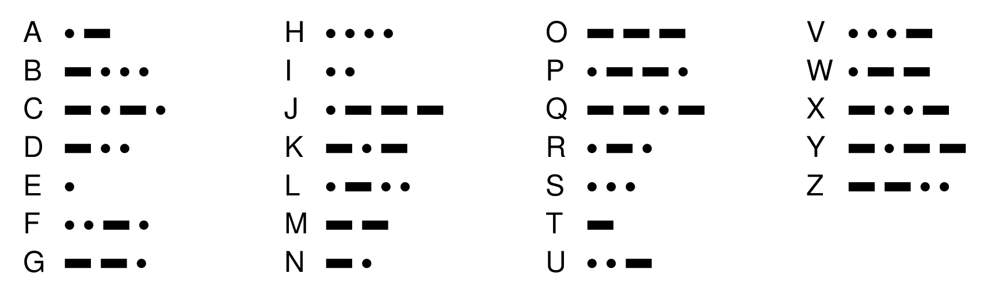

Jed Rembold and Eric Roberts
Week of November 6th
You are tasked with identifying what is returned for every function call from the below code:
def mystery(x):
def puzzle(x, y=5):
return x * y
def enigma(y):
return y ** x
return enigma(puzzle(x=2)) + enigma(puzzle(3, x))
if __name__ == '__main__':
print(mystery(3))Here you are tasked with:
from pgl import GWindow, GCompound, GRect
from random import uniform
WIDTH = 600
HEIGHT = 600
def create_cross():
""" Creates the cross GCompound """
c = GCompound()
hrect = GRect(60, 20)
hrect.set_filled(True)
hrect.set_color("red")
vrect = GRect(20, 60)
vrect.set_filled(True)
vrect.set_color("red")
c.add(hrect, -30, -10)
c.add(vrect, -10, -30)
return c
def step():
""" Animates the cross movement """
cross.move_polar(2, gw.heading)
def click_action(event):
""" Changes the heading if clicked within the cross """
mx, my = event.get_x(), event.get_y()
if cross.contains(mx, my):
gw.heading = uniform(0, 360)
gw = GWindow(WIDTH, HEIGHT)
cross = create_cross()
gw.add(cross, WIDTH/2, HEIGHT/2)
gw.heading = uniform(0, 360)
gw.set_interval(step, 20)
gw.add_event_listener("mousedown", click_action) #click would be fine tooTrue if the puzzle is
valid and these conditions are met, or False
if there is a single instance of the condition being broken
One possible solution might look like:
def no_duplicate_rows(puzzle):
""" Checks that no two rows are exact duplicates of one
another. """
for i in range(len(puzzle)):
row = puzzle[i]
if row in puzzle[i+1:]:
return False
return TrueThere are many ways that this could be approached, but here I used a string to contain the consecutive sequences
def no_3petes_in_rows(puzzle):
""" Checks that 3 blue or red squares never appear
adjacently in a row. """
for row in puzzle:
cons_str = "" #holds string of adj letters
for letter in row:
if cons_str == "" or letter == cons_str[-1]:
cons_str += letter
else:
cons_str = letter
if cons_str == "RRR" or cons_str == "BBB":
return False
return TrueYou are again tasked with identifying what is returned for every function call from the below code:
def puzzle(t):
def mystery(r, x):
x += 1
def enigma(s=0):
return r[s::x]
return enigma
x = 2
y = mystery(t, x=x)
return y(x) + y()
if __name__ == '__main__':
print(puzzle("angriest"))from pgl import GWindow, GRect
SEG_WIDTH = 20
GW_WIDTH = 41 * SEG_WIDTH
GW_HEIGHT = 31 * SEG_WIDTH
DELTA_TIME = 150
def snake():
"""Runs a basic implementation of the game Snake"""
def step():
rect = GRect(
gw.headx - SEG_WIDTH / 2, gw.heady - SEG_WIDTH / 2,
SEG_WIDTH, SEG_WIDTH
)
rect.set_filled(True)
rect.set_fill_color("gray")
gw.add(rect)
if gw.snake_facing == "east":
gw.headx += SEG_WIDTH
elif gw.snake_facing == "west":
gw.headx -= SEG_WIDTH
elif gw.snake_facing == "north":
gw.heady -= SEG_WIDTH
elif gw.snake_facing == "south":
gw.heady += SEG_WIDTH
def down_action(event):
mx, my = event.get_x(), event.get_y()
if gw.snake_facing in ["north", "south"]:
if mx > gw.headx:
gw.snake_facing = "east"
else:
gw.snake_facing = "west"
else:
if my > gw.heady:
gw.snake_facing = "south"
else:
gw.snake_facing = "north"
gw = GWindow(GW_WIDTH, GW_HEIGHT)
gw.headx, gw.heady = GW_WIDTH // 2, GW_HEIGHT // 2
gw.snake_facing = "south"
gw.set_interval(step, DELTA_TIME)
gw.add_event_listener("mousedown", down_action)
if __name__ == "__main__":
snake()rotate_array which will shift all the
elements of a list to the left or to the right by a specified
amountrotate_array(digits, 1) should shift the
elements one position to the left, and move the first value to the
endrotate_array(digits, -3) should shift
the elements three positions to the right, moving the last three
elements back around to the beginningThis is assuredly not the most compact solution, but I liked working out how to rotate the array by 1, and then just using a loop to repeat it the desired number of times:
def rotate_array(array, n):
def roll_forward(array):
tmp = array[0]
for i in range(len(array)-1):
array[i] = array[i+1]
array[-1] = tmp
def roll_backward(array):
tmp = array[-1]
for i in range(len(array)-1, 0, -1):
array[i] = array[i - 1]
array[0] = tmp
for i in range(abs(n)):
if n > 0:
roll_forward(array)
else:
roll_backward(array)
# File: MorseCodeDictionary.py
"""
This file defines a dictionary called LETTERS_TO_MORSE
whose entries are the Morse code translations of the letters.
"""
# Constants
LETTERS_TO_MORSE = {
"A": ".-",
"B": "-...",
"C": "-.-.",
"D": "-..",
"E": ".",
"F": "..-.",
"G": "--.",
"H": "....",
"I": "..",
"J": ".---",
"K": "-.-",
"L": ".-..",
"M": "--",
"N": "-.",
"O": "---",
"P": ".--.",
"Q": "--.-",
"R": ".-.",
"S": "...",
"T": "-",
"U": "..-",
"V": "...-",
"W": ".--",
"X": "-..-",
"Y": "-.--",
"Z": "--.."
}In this problem, your job is to write a Python program that translates messages to Morse code.
Your program should read in lines from the user and then translate each line into Morse code.
Your program should continue prompting the user and translating until and empty line is entered
A sample run of this program (taken from the messages between the Titanic and the Carpathia in 1912) might look like this:
> SOS TITANIC
... --- ... - .. - .- -. .. -.-.
> WE ARE SINKING FAST
.-- . .- .-. . ... .. -. -.- .. -. --. ..-. .- ... -
>... --- .-.. ..- - .. --- -.# File: MorseCode.py
"""This program solves the MorseCode problem from section."""
from MorseCodeDictionary import LETTERS_TO_MORSE
def morse_code():
"""Translates lines to and from Morse code."""
finished = False
while not finished:
line = input("> ")
if line == "":
finished = True;
else:
print(translate_letters_to_morse(line))
# Implementation note: translate_letters_to_morse
# -----------------------------------------------
# Translates a string of letters into Morse code characters separated
# by spaces. Characters that don't appear in the table are ignored.
def translate_letters_to_morse(line):
morse = ""
for ch in line.upper():
if ch in LETTERS_TO_MORSE:
if morse != "":
morse += " "
morse += LETTERS_TO_MORSE[ch]
return morse
# Startup code
if __name__ == "__main__":
morse_code()